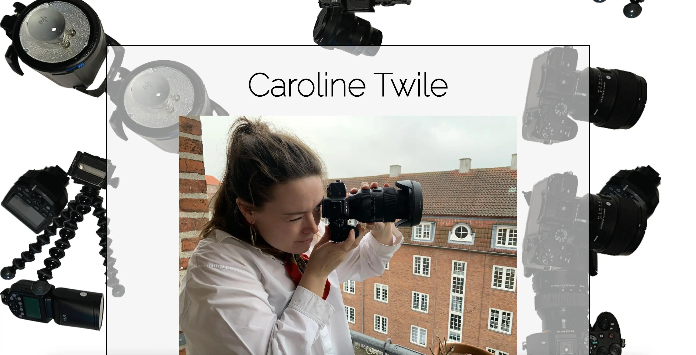

Grundlæggende indhold
Pilotsite
I dette tema skulle vi ud fra et oplæg lave en pilotvideo af én som fortæller om sin passion og designe et site. Selve shootet skulle vi lave i hold af 2. Min gruppe lejede en mikrofon i Techlounge, så vi kunne optage separat god lyd og så planlagde vi selve shootet med en interviewguide, en liste over mulige b-rolls og så arbejde vi ud fra 5-skudsreglen. Selve klipningen foregik hver for sig. Her arbejdede jeg med lyd og billede i Premiere Pro.
På sitet havde jeg ikke fokus på designprincipper, udover et symmetrisk layout, men mere fokus på øvelse i kodning af bl.a. javascript med faldende elementer i baggrunden.
#pilotsite.pilotvideo
.pilotsite
Redesign
I denne opgave skulle vi redsigne websitet for en virksomhed, og vi fik lavet en aftale med en personlig træner med virksomheden Sund med Signe. Vi brugte UX-metoder til undersøgelse af den eksisterende website, og lavede en 5 sekunders test, samt en ekspertvurdering og survey. Ud fra de indsigter, valgte vi i UI processen, at fokusere på at ændre farven i logoet og på sitet generelt, simplificere indholdet i form af sort-hvid billeder og ændring af copy og på den måde mindske sitemappet, samt anvende et minimalistisk design.
Vi samarbejdede omkring design ift udvælgelse af farver, fotostil og udarbejdelse af skitser for hele siden. Herefter delte vi siderne og resterende opgaver ifm indhold op, så vi hver fik ansvar for en del af redesignet. Vi brugte scrumboard til at koordinere arbejdsopgaverne, og Github som platform til deling af vores kode med hinanden. Mit ansvar var siden ”Priser”, kodningen af headeren, samt gennemrette og strømline kodningen til slut på tværs af alle siderne.
Præsentationen gik godt og vi formåede at gennemføre det design vi havde tænkt os. Udover det, var samarbejdet i gruppen produktivt og vi havde stor glæde af gruppekontrakten vi havde aftalt på forhånd.
#redesign